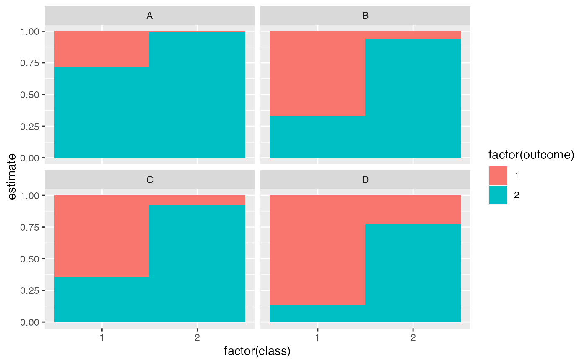
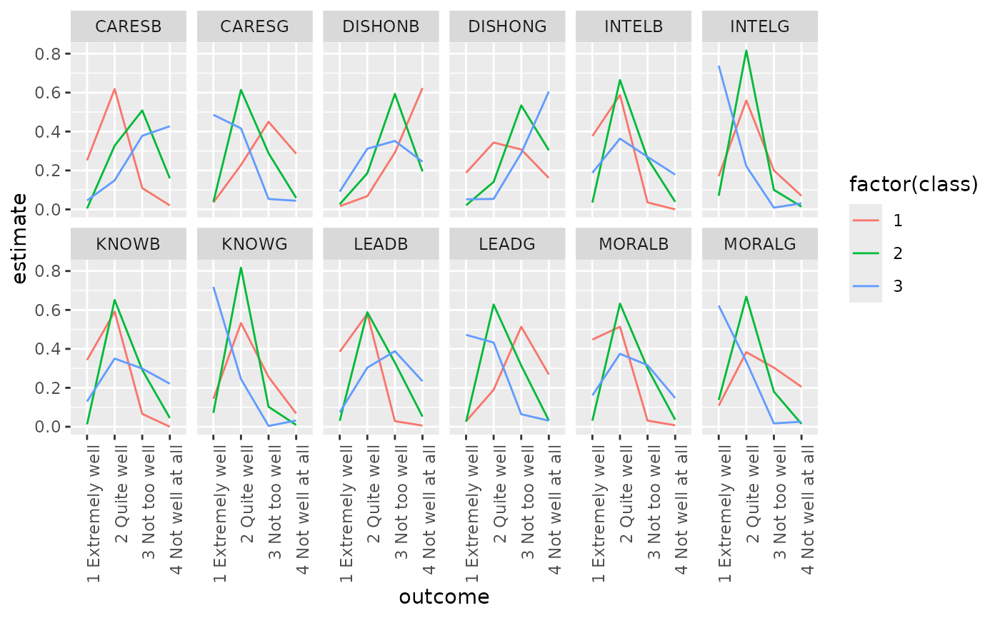

Augment accepts a model object and a dataset and adds
information about each observation in the dataset. Most commonly, this
includes predicted values in the .fitted column, residuals in the
.resid column, and standard errors for the fitted values in a .se.fit
column. New columns always begin with a . prefix to avoid overwriting
columns in the original dataset.
Users may pass data to augment via either the data argument or the
newdata argument. If the user passes data to the data argument,
it must be exactly the data that was used to fit the model
object. Pass datasets to newdata to augment data that was not used
during model fitting. This still requires that at least all predictor
variable columns used to fit the model are present. If the original outcome
variable used to fit the model is not included in newdata, then no
.resid column will be included in the output.
Augment will often behave differently depending on whether data or
newdata is given. This is because there is often information
associated with training observations (such as influences or related)
measures that is not meaningfully defined for new observations.
For convenience, many augment methods provide default data arguments,
so that augment(fit) will return the augmented training data. In these
cases, augment tries to reconstruct the original data based on the model
object with varying degrees of success.
The augmented dataset is always returned as a tibble::tibble with the
same number of rows as the passed dataset. This means that the
passed data must be coercible to a tibble. At this time, tibbles do not
support matrix-columns. This means you should not specify a matrix
of covariates in a model formula during the original model fitting
process, and that splines::ns(), stats::poly() and
survival::Surv() objects are not supported in input data. If you
encounter errors, try explicitly passing a tibble, or fitting the original
model on data in a tibble.
We are in the process of defining behaviors for models fit with various
na.action arguments, but make no guarantees about behavior when data is
missing at this time.
# S3 method for poLCA augment(x, data = NULL, ...)
| x | A |
|---|---|
| data | A base::data.frame or |
| ... | Additional arguments. Not used. Needed to match generic
signature only. Cautionary note: Misspelled arguments will be
absorbed in |
If the data argument is given, those columns are included in
the output (only rows for which predictions could be made).
Otherwise, the y element of the poLCA object, which contains the
manifest variables used to fit the model, are used, along with any
covariates, if present, in x.
Note that while the probability of all the classes (not just the predicted
modal class) can be found in the posterior element, these are not
included in the augmented output.
Other poLCA tidiers:
glance.poLCA(),
tidy.poLCA()
A tibble::tibble() with columns:
Predicted class.
Class probability of modal class.
#>library(dplyr) data(values) f <- cbind(A, B, C, D) ~ 1 M1 <- poLCA(f, values, nclass = 2, verbose = FALSE) M1#> Conditional item response (column) probabilities, #> by outcome variable, for each class (row) #> #> $A #> Pr(1) Pr(2) #> class 1: 0.2864 0.7136 #> class 2: 0.0068 0.9932 #> #> $B #> Pr(1) Pr(2) #> class 1: 0.6704 0.3296 #> class 2: 0.0602 0.9398 #> #> $C #> Pr(1) Pr(2) #> class 1: 0.6460 0.3540 #> class 2: 0.0735 0.9265 #> #> $D #> Pr(1) Pr(2) #> class 1: 0.8676 0.1324 #> class 2: 0.2309 0.7691 #> #> Estimated class population shares #> 0.7208 0.2792 #> #> Predicted class memberships (by modal posterior prob.) #> 0.6713 0.3287 #> #> ========================================================= #> Fit for 2 latent classes: #> ========================================================= #> number of observations: 216 #> number of estimated parameters: 9 #> residual degrees of freedom: 6 #> maximum log-likelihood: -504.4677 #> #> AIC(2): 1026.935 #> BIC(2): 1057.313 #> G^2(2): 2.719922 (Likelihood ratio/deviance statistic) #> X^2(2): 2.719764 (Chi-square goodness of fit) #>#> # A tibble: 16 x 5 #> variable class outcome estimate std.error #> <chr> <int> <dbl> <dbl> <dbl> #> 1 A 1 1 0.286 0.0393 #> 2 A 2 1 0.00681 0.0254 #> 3 A 1 2 0.714 0.0393 #> 4 A 2 2 0.993 0.0254 #> 5 B 1 1 0.670 0.0489 #> 6 B 2 1 0.0602 0.0649 #> 7 B 1 2 0.330 0.0489 #> 8 B 2 2 0.940 0.0649 #> 9 C 1 1 0.646 0.0482 #> 10 C 2 1 0.0735 0.0642 #> 11 C 1 2 0.354 0.0482 #> 12 C 2 2 0.927 0.0642 #> 13 D 1 1 0.868 0.0379 #> 14 D 2 1 0.231 0.0929 #> 15 D 1 2 0.132 0.0379 #> 16 D 2 2 0.769 0.0929#> # A tibble: 216 x 7 #> A B C D X.Intercept. .class .probability #> <dbl> <dbl> <dbl> <dbl> <dbl> <int> <dbl> #> 1 2 2 2 2 1 2 0.959 #> 2 2 2 2 2 1 2 0.959 #> 3 2 2 2 2 1 2 0.959 #> 4 2 2 2 2 1 2 0.959 #> 5 2 2 2 2 1 2 0.959 #> 6 2 2 2 2 1 2 0.959 #> 7 2 2 2 2 1 2 0.959 #> 8 2 2 2 2 1 2 0.959 #> 9 2 2 2 2 1 2 0.959 #> 10 2 2 2 2 1 2 0.959 #> # … with 206 more rows#> # A tibble: 1 x 8 #> logLik AIC BIC g.squared chi.squared df df.residual nobs #> <dbl> <dbl> <dbl> <dbl> <dbl> <dbl> <dbl> <int> #> 1 -504. 1027. 1057. 2.72 2.72 9 6 216library(ggplot2) ggplot(tidy(M1), aes(factor(class), estimate, fill = factor(outcome))) + geom_bar(stat = "identity", width = 1) + facet_wrap(~variable)## Three-class model with a single covariate. data(election) f2a <- cbind( MORALG, CARESG, KNOWG, LEADG, DISHONG, INTELG, MORALB, CARESB, KNOWB, LEADB, DISHONB, INTELB ) ~ PARTY nes2a <- poLCA(f2a, election, nclass = 3, nrep = 5, verbose = FALSE) td <- tidy(nes2a) td#> # A tibble: 144 x 5 #> variable class outcome estimate std.error #> <chr> <int> <fct> <dbl> <dbl> #> 1 MORALG 1 1 Extremely well 0.137 0.0182 #> 2 MORALG 2 1 Extremely well 0.108 0.0175 #> 3 MORALG 3 1 Extremely well 0.622 0.0309 #> 4 MORALG 1 2 Quite well 0.668 0.0247 #> 5 MORALG 2 2 Quite well 0.383 0.0274 #> 6 MORALG 3 2 Quite well 0.335 0.0293 #> 7 MORALG 1 3 Not too well 0.180 0.0208 #> 8 MORALG 2 3 Not too well 0.304 0.0253 #> 9 MORALG 3 3 Not too well 0.0172 0.00841 #> 10 MORALG 1 4 Not well at all 0.0143 0.00680 #> # … with 134 more rows# show ggplot(td, aes(outcome, estimate, color = factor(class), group = class)) + geom_line() + facet_wrap(~variable, nrow = 2) + theme(axis.text.x = element_text(angle = 90, hjust = 1))#> # A tibble: 1,300 x 16 #> MORALG CARESG KNOWG LEADG DISHONG INTELG MORALB CARESB KNOWB LEADB DISHONB #> <fct> <fct> <fct> <fct> <fct> <fct> <fct> <fct> <fct> <fct> <fct> #> 1 3 Not … 1 Extr… 2 Qui… 2 Qu… 3 Not … 2 Qui… 1 Ext… 1 Ext… 2 Qu… 2 Qu… 4 Not … #> 2 1 Extr… 2 Quit… 2 Qui… 1 Ex… 3 Not … 2 Qui… 2 Qui… 2 Qui… 2 Qu… 3 No… 3 Not … #> 3 2 Quit… 2 Quit… 2 Qui… 2 Qu… 2 Quit… 2 Qui… 2 Qui… 3 Not… 2 Qu… 2 Qu… 3 Not … #> 4 2 Quit… 4 Not … 2 Qui… 3 No… 2 Quit… 2 Qui… 1 Ext… 1 Ext… 2 Qu… 2 Qu… 3 Not … #> 5 2 Quit… 2 Quit… 2 Qui… 2 Qu… 3 Not … 2 Qui… 3 Not… 4 Not… 4 No… 4 No… 3 Not … #> 6 2 Quit… 2 Quit… 2 Qui… 3 No… 4 Not … 2 Qui… 2 Qui… 3 Not… 2 Qu… 2 Qu… 3 Not … #> 7 1 Extr… 1 Extr… 1 Ext… 1 Ex… 4 Not … 1 Ext… 2 Qui… 4 Not… 2 Qu… 3 No… 3 Not … #> 8 2 Quit… 2 Quit… 2 Qui… 2 Qu… 3 Not … 2 Qui… 3 Not… 2 Qui… 2 Qu… 2 Qu… 3 Not … #> 9 2 Quit… 2 Quit… 2 Qui… 2 Qu… 3 Not … 2 Qui… 2 Qui… 2 Qui… 2 Qu… 3 No… 2 Quit… #> 10 2 Quit… 3 Not … 2 Qui… 2 Qu… 3 Not … 2 Qui… 2 Qui… 4 Not… 2 Qu… 4 No… 2 Quit… #> # … with 1,290 more rows, and 5 more variables: INTELB <fct>, #> # X.Intercept. <dbl>, PARTY <dbl>, .class <int>, .probability <dbl>#> # A tibble: 3 x 2 #> .class n #> <int> <int> #> 1 1 496 #> 2 2 444 #> 3 3 360# if the original data is provided, it leads to NAs in new columns # for rows that weren't predicted au2 <- augment(nes2a, data = election) au2#> # A tibble: 1,785 x 20 #> MORALG CARESG KNOWG LEADG DISHONG INTELG MORALB CARESB KNOWB LEADB DISHONB #> <fct> <fct> <fct> <fct> <fct> <fct> <fct> <fct> <fct> <fct> <fct> #> 1 3 Not … 1 Extr… 2 Qui… 2 Qu… 3 Not … 2 Qui… 1 Ext… 1 Ext… 2 Qu… 2 Qu… 4 Not … #> 2 4 Not … 3 Not … 4 Not… 3 No… 2 Quit… 2 Qui… NA NA 2 Qu… 3 No… NA #> 3 1 Extr… 2 Quit… 2 Qui… 1 Ex… 3 Not … 2 Qui… 2 Qui… 2 Qui… 2 Qu… 3 No… 3 Not … #> 4 2 Quit… 2 Quit… 2 Qui… 2 Qu… 2 Quit… 2 Qui… 2 Qui… 3 Not… 2 Qu… 2 Qu… 3 Not … #> 5 2 Quit… 4 Not … 2 Qui… 3 No… 2 Quit… 2 Qui… 1 Ext… 1 Ext… 2 Qu… 2 Qu… 3 Not … #> 6 2 Quit… 3 Not … 3 Not… 2 Qu… 2 Quit… 2 Qui… 2 Qui… NA 3 No… 2 Qu… 2 Quit… #> 7 2 Quit… NA 2 Qui… 2 Qu… 4 Not … 2 Qui… NA 3 Not… 2 Qu… 2 Qu… 4 Not … #> 8 2 Quit… 2 Quit… 2 Qui… 2 Qu… 3 Not … 2 Qui… 3 Not… 4 Not… 4 No… 4 No… 3 Not … #> 9 2 Quit… 2 Quit… 2 Qui… 3 No… 4 Not … 2 Qui… 2 Qui… 3 Not… 2 Qu… 2 Qu… 3 Not … #> 10 1 Extr… 1 Extr… 1 Ext… 1 Ex… 4 Not … 1 Ext… 2 Qui… 4 Not… 2 Qu… 3 No… 3 Not … #> # … with 1,775 more rows, and 9 more variables: INTELB <fct>, VOTE3 <dbl>, #> # AGE <dbl>, EDUC <dbl>, GENDER <dbl>, PARTY <dbl>, .class <int>, #> # .probability <dbl>, .rownames <chr>#> [1] 1785 20